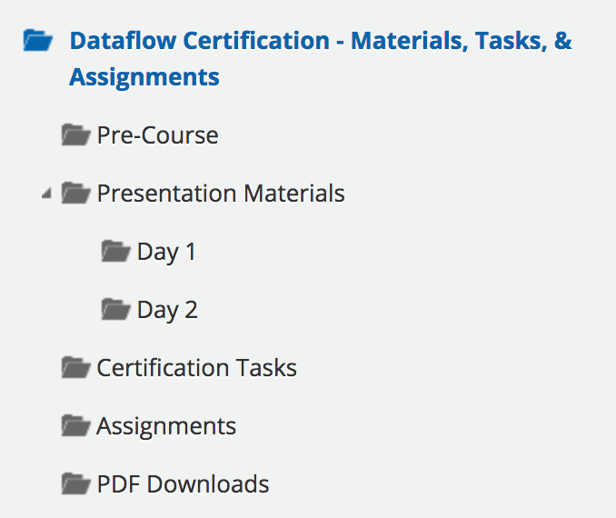

Welcome to the Certification
We're glad to see you embark on your journey to learn the Dataflow Automation web service and become proficient at solving business problems by developing automated data solutions. In order to be successful, read through this guide to familiarize yourself with the navigation and content.
On the left hand side of the course's homepage you will see a folder menu. Here is a description of each folder:

- Pre-Course: Go to this folder before the certification begins. The purpose of the content is to best ensure all participants have a working basis of knowledge about Dataflow Automation and can keep pace during the certification.
- Presentation Materials: Adobe Captivate presentations on each certification topic. Presentation Materials are split into Day 1 and Day 2.
- Certification Tasks: Throughout the certification you will be required to complete tasks demonstrating skills and knowledge. These tasks are noted in Presentation Materials, but completed in Zerion Academy. Go to this folder each time you are prompted.
- Assignments: Assignments are larger and less guided than Certification Tasks. Think of these as projects designed to assess your proficiency. There will be an assignment given at the end of each day.
- PDF Downloads: Do you like to print out materials and follow along taking notes? Go here to print out the Presentation Materials.